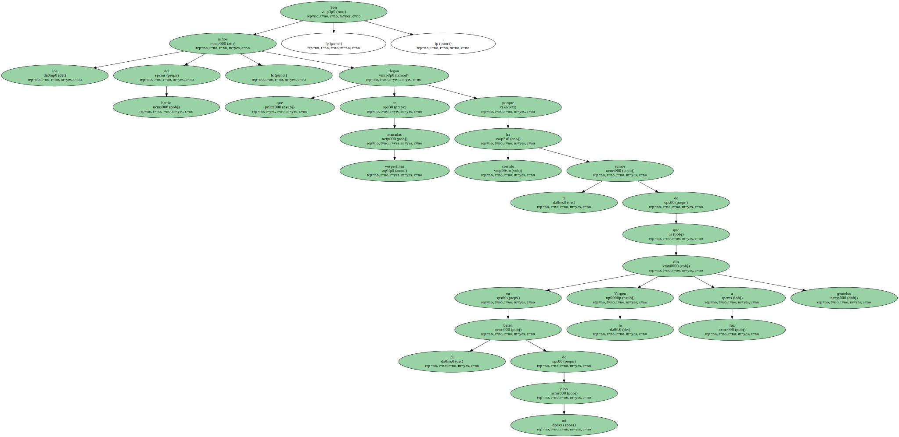
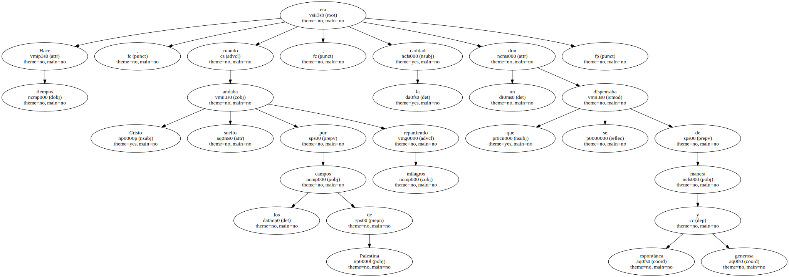
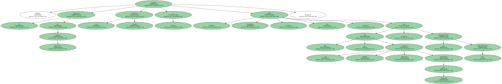
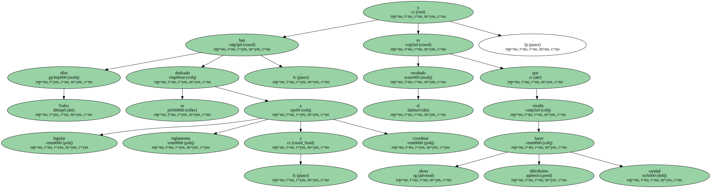
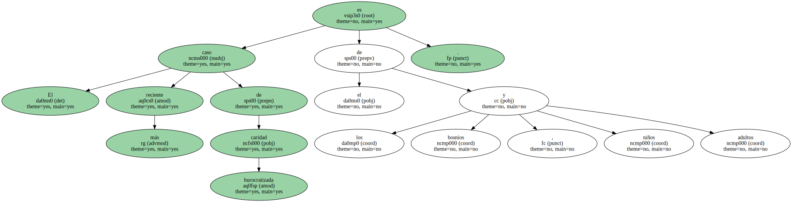
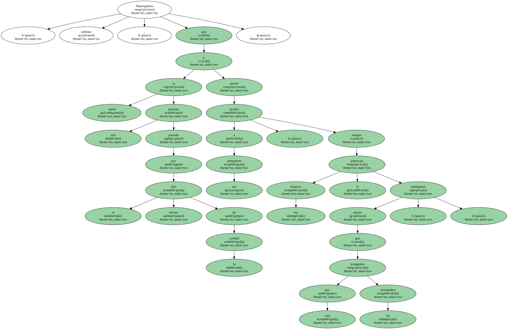

Son los niños del barrio , que llegan en vespertinas manadas porque ha corrido el rumor de que en el belén de mi piso la Virgen dio a luz gemelos ..
Hace tiempos , cuando Cristo andaba suelto por los campos de Palestina repartiendo milagros , la caridad era un don que se dispensaba de manera espontánea y generosa.
Después llegaron los ministerios de Asuntos Exteriores , las Naciones Unidas y , finalmente , las ONGs , que no son las últimas criaturas espaciales inventadas por Spielberg , sino las Organizaciones No Gubernamentales.
Todos ellos se han dedicado a legislar , reglamentar y coordinar , y el resultado es que ahora resulta dificilísimo hacer caridad.
Ya no basta con querer practicarla , como en tiempos de Cristo y sus apóstoles , sino que es preciso estar autorizado para ello.
El más reciente caso de caridad burocratizada es el de los bosnios , niños y adultos.
Supongamos que usted ha leído en la Prensa y visto en la televisión la tragedia de ese país que alguna vez fue Yugoslavia , y se encuentra conmovido por la suerte que espera en este invierno a los refugiados bosnios.

Supongamos , además , que usted es una persona poseída por el divino don de la caridad y quiere ayudar a sus semejantes , aunque los bosnios le parezcan menos semejantes que , pongamos por caso , los extremeños.
Muy bien : - cree usted que puede dar franca salida a sus ímpetus caritativos agarrando un bosnio o dos y llevándolos a su casa para colmarlos de atenciones , protegerlos del invierno , regalarles turrón en Navidad y hacerles ver que la solidaridad humana velaría por ellos y por los demás destituidos del mundo.

Pues se equivoca.
Es posible que usted consiga ganarse el cielo y ser motivo de ejemplo en las tertulias que sostienen los ángeles después del almuerzo en las nubes rosadas , sin haber visto nunca un bosnio de cerca.

- Por qué.